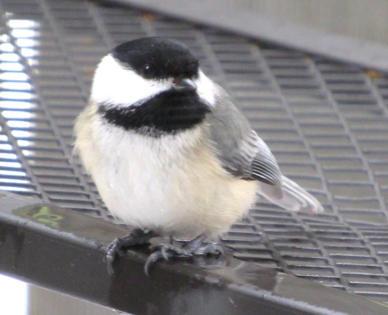
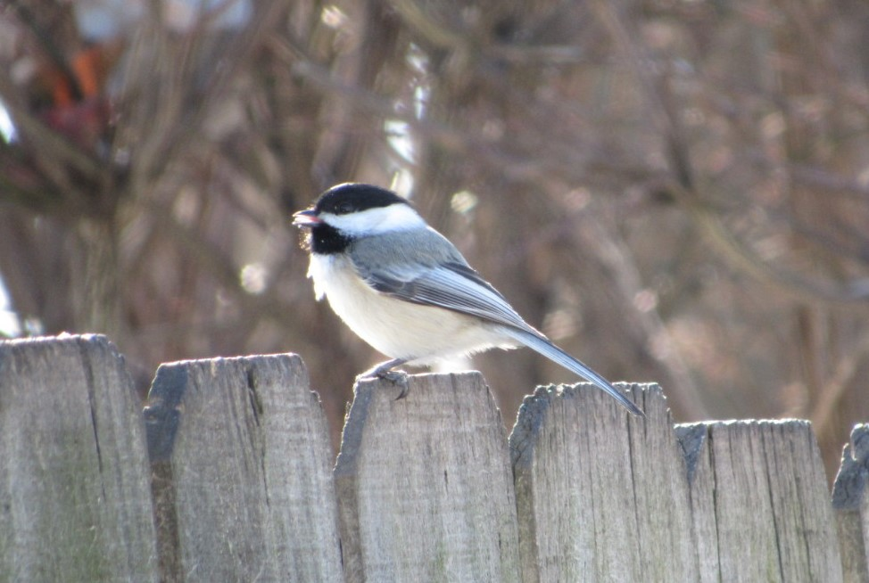

Black Capped Chickadee


- Description
- A bird almost universally considered “cute” thanks to its oversized round head, tiny body, and curiosity about everything, including humans. The chickadee’s black cap and bib; white cheeks; gray back, wings, and tail; and whitish underside with buffy sides are distinctive. Its habit of investigating people and everything else in its home territory, and quickness to discover bird feeders, make it one of the first birds most people learn.
- Behavior
- Black-capped Chickadees seldom remain at feeders except to grab a seed to eat elsewhere. They are acrobatic and associate in flocks—the sudden activity when a flock arrives is distinctive. They often fly across roads and open areas one at a time with a bouncy flight. Flocks have many calls with specific meanings, and they may contain some of the characteristics of human language.
- Habitat
- Chickadees may be found in any habitat that has trees or woody shrubs, from forests and woodlots to residential neighborhoods and parks, and sometimes weedy fields and cattail marshes. They frequently nest in birch or alder trees.
- Diet
- In winter Black-capped Chickadees eat about half seeds, berries, and other plant matter, and half animal food (insects, spiders, suet, and sometimes fat and bits of meat from frozen carcasses). In spring, summer, and fall, insects, spiders, and other animal food make up 80-90 percent of their diet. At feeders they take mostly sunflower seeds, peanuts, suet, peanut butter, and mealworms. They peck a hole in the shell, and then chip out and eat tiny bits of seed while expanding the hole.
Chickadee Call
Cool Facts
- Every autumn Black-capped Chickadees allow brain neurons containing old information to die, replacing them with new neurons so they can adapt to changes in their social flocks and environment even with their tiny brains.
- Chickadee calls are complex and language-like, communicating information on identity and recognition of other flocks as well as predator alarms and contact calls. The more dee notes in a chickadee-dee-dee call, the higher the threat level.
- The Black-capped Chickadee hides seeds and other food items to eat later. Each item is placed in a different spot and the chickadee can remember thousands of hiding places.